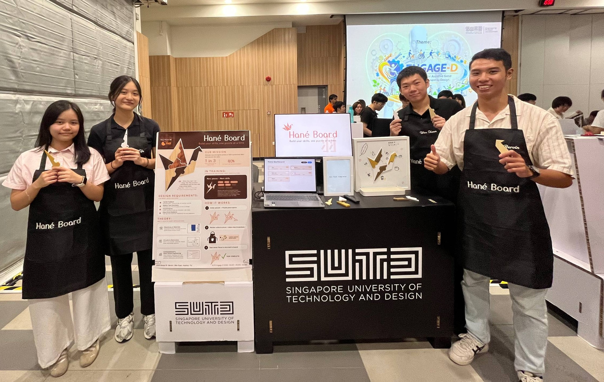
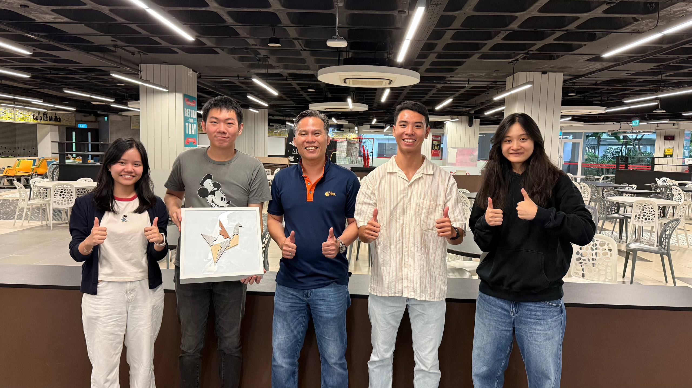
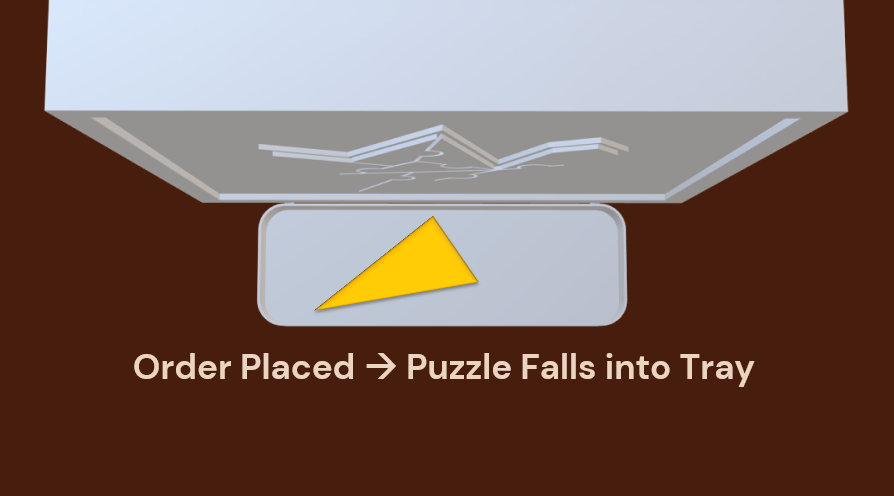
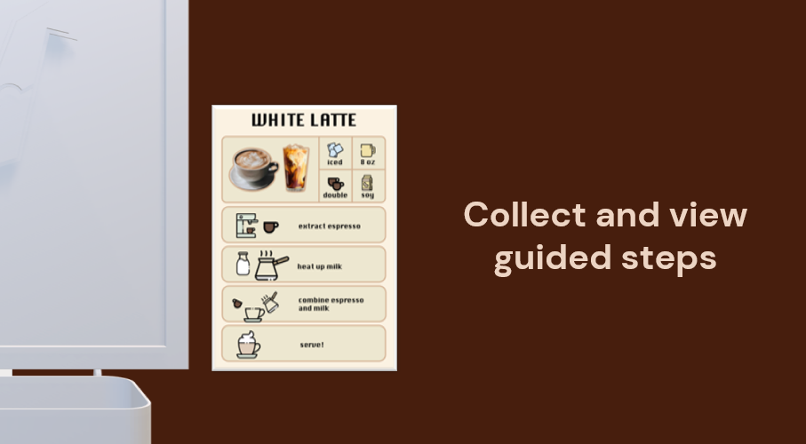
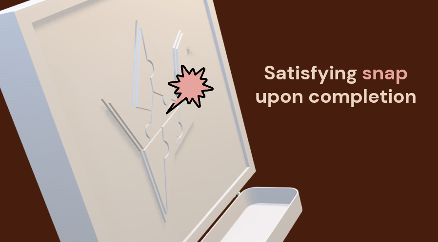
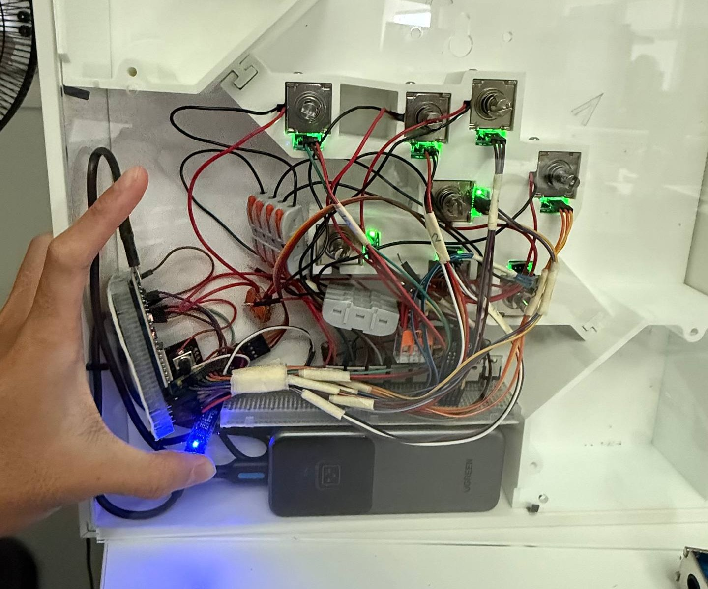
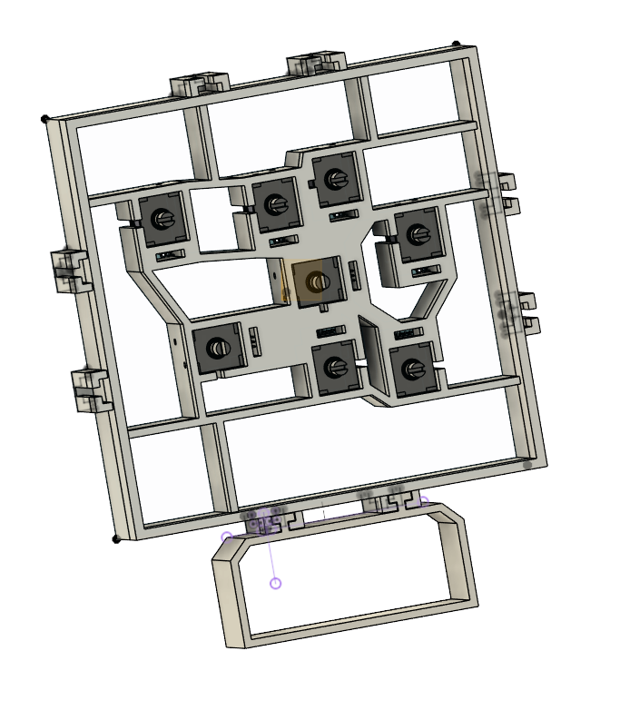
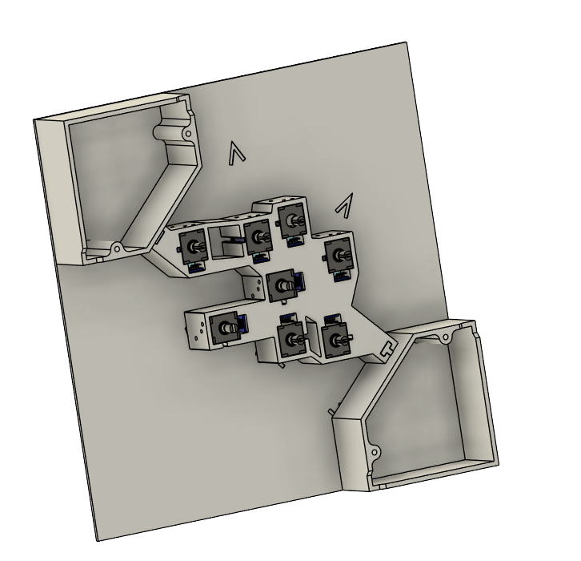

A tactile puzzle training system designed to prepare neurodivergent workers for the fast-paced Food & Beverage industry by breaking down complex workflows.

ESP32-S3
PCF8574 (I2C Protocol)
Solenoids driven by MOSFETs
LDR (Light Dependent Resistor) Matrix
Flour Power SG is an inclusive F&B organisation that trains and employs persons with disabilities. Through this collaboration, we found that neurodivergent workers can find traditional training methods overwhelming. Hané Board turns F&B workflows into physical puzzle-based tasks, creating an engaging way for users to build muscle memory, stay motivated, work independently, and reduce supervisor workload.


The cashier inputs an order, and Hané Board releases the matching puzzle piece for the task into the tray.

The worker collects the piece and views a clear, step-by-step visual breakdown on the digital UI to complete the physical task.

After completing the task, the worker snaps the piece back into the board. The system records the completion and updates their colour mastery level, helping them track progress and stay motivated.



During prototyping, we tested electromagnets to release the components, but the repelling force generated was far too weak to push out the magnetic puzzle pieces from their holding tracks.
We pivoted to solenoids. The physical plunger action provided a much stronger, positive mechanical push that cleared the track smoothly for piece dispensing.
The magnets embedded inside the physical puzzle pieces were too strong when resting directly against the metal dispensing core, making it difficult for the solenoid plunger to push out the piece.
We 3D-printed a custom internal spacer to create a distance between the solenoid face and the puzzle piece magnet, reducing the magnet strength to allow puzzle piece dispensing.
We chose 6V solenoids to keep the system compatible with common power-bank options, but we overlooked the increase in current. Our power bank could not supply 2A directly.
We added FQP30N06L MOSFET drivers to act as high-current switches, allowing the microcontroller to safely turn on the solenoids using a separate power path.
The LDR sensor matrix was highly vulnerable to shifting room lighting environments, causing inconsistent puzzle placement detection.
We tuned the LDR module’s sensitivity using its built-in variable resistor and added a 2-second confirmation delay in code before registering a puzzle piece as fully returned.